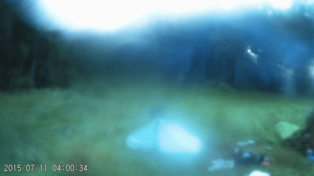
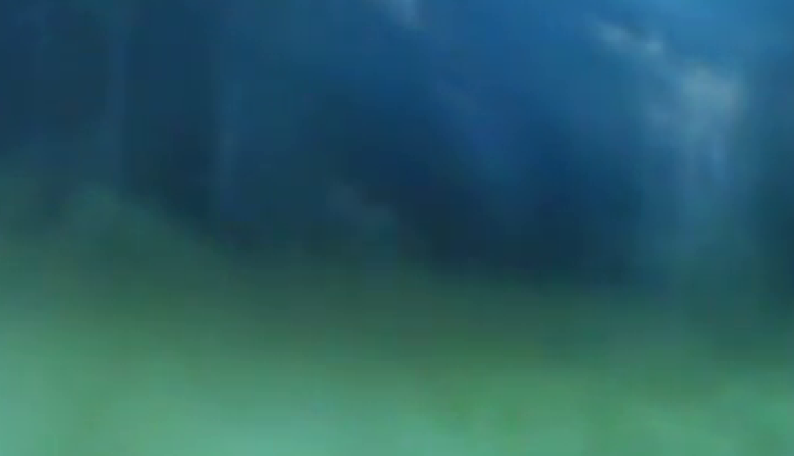

Вступление: просмотренное некоторое время назад видео “Экспертиза аномального полёта предмета, брошенного СЧ” (https://www.youtube.com/watch?v=od5TsGRkbA4) натолкнуло на мысль пересмотреть старые видео внимательным, покадровым взглядом. Подход оказался плодотворным и просмотр видео https://www.youtube.com/watch?v=cZ0iqJPS-Ac в таком режиме привёл к любопытной находке.
Об исследуемом видео: само видео было записано 8 лет назад и снято на камеру-ловушку. В лагере исследователей Игоря Дмитриевича и Андрея Николаевича, за палаткой, на видео запечатлелось тёмное пятно, которое на месте тогда (а не на видео) не было видно – маскирующийся Снежный Человек.
Новая находка: объект, движущийся с 12 секунды youtube-видео (временная метка в этот момент показывает 2015/07/11 04:00:34) по 14 секунду youtube-видео (временная метка в этот момент показывает 2015/07/11 04:00:36). Начало движения в правой части кадра – где-то между костром и лесом – прыжками влево. Потом направление движения меняется в сторону палатки, где объект практически теряется из виду. Далее, видно как объект продолжает движение от палатки влево. Внешний вид объекта непривычен – цвет похож на туман, а на разных кадрах угадываются разные части человекоподобной формы объекта. Движение очень быстрое.
Для иллюстрации был записан gif с покадровым выделеннием объекта с помощью точек
Без точек

Движение не прямолинейное. с изменением траектории. На рамзеченных кадрах 1-10 (общие фреймы видео 365-374) хорошо читается прыжок. На кадрах 11-15 (фреймы 375-379) вроде бы тоже. И ещё, возможно, на 53-57 (фреймы 417-421), но это уже трудно утверждать, поскольку на кадрах 18-59 (фреймы 382-423) объект виден хуже – предположу, что эту часть движения объект осуществляет через траву и видна лишь его часть, выступающая из травы. Возможно, что эта часть движения осуществляется на четвереньках.
Внешний вид лучше всего читается на фрейме 374.

Без обводки

Мои дальнейшие выкладки носят вероятностный характер – я скорее всего “где-то близко”, но в конкретных цифрах не вполне точен. Буду рад, если меня поправят.
Для анализа движения объекта использовал программу Tracker версии 6.1.6 (https://physlets.org/tracker/). Для продуктивной работы с ней нужно: выбрать диапазон фреймов видео; покадрово отметить объект; указать сколько кадров видео соответствует секунде времени; и задать эталонный размер, относительно которого будут вестись расчёты.
Интересующий диапазон фреймов выбран: 364-423.
Для указания количества кадров в секунде пригодилась временная метка на видео – количество фреймов до смены секунд на ней: 30.
Покадровая отметка объекта на открытой правой части сравнительно легка, сложнее в траве - в центре и слева. При этом есть интересный технический момент – есть кадры когда объект практически не меняет своего положения, хотя на других передвижение объекта за время кадра существенно: 5-6 (фреймы 369-370), 12-13 (фреймы 376-377), 18-19 (фреймы 382-383), 24-25 (фреймы 388-389), 29-30 (фреймы 393-394), 31-32 (фреймы 395-396), 37-38 (фреймы 401-402), 40-41 (фреймы 404-405), 43-44 (фреймы 407-408), 50-51 (фреймы 414-415), 56-57 (фреймы 420-421).
Самая сложная часть с эталонным размером.
У меня не только нет точных размеров, но и возникает задача учёта искажения от расстояния – чем дальше объект находится от нижнего края кадра, тем короче он будет казаться – утрируя для иллюстрации – лес в верхней части кадра явно не может быть высотой в три палатки. Ещё одна проблема – трава – от неё видны лишь верхушки, а уровень земли на самом деле скрыт за ней и находится не известно на сколько ниже.
Для решения этой части задачи воспользуемся ещё одним видео той же местности с той же камеры-ловушки: https://www.youtube.com/watch?v=v_3cR2UQs1Q
Ближе всего к эталону – Игорь Дмитриевич. В главе своей книги, говоря про ширину следа, он упоминал свой рост 186 см. С одной стороны рост при замерах выше, чем при естественном движении, с другой не известна высота обуви… Примем рост на кадре 180 см.
Уменьшение размеров в зависимости от удаления от нижнего края попробуем рассчитать по пропорции. Сделаем несколько замеров по мере удаления вверх по кадру. Пару в центре, и пару справа.

Замеры:
mass_A
| x | y |
| 1.328638E2 | 2.491196E1 |
| 1.340500E2 | 3.760519E2 |
| x | y |
| 1.874328E2 | 4.745134E1 |
| 1.933642E2 | 3.784245E2 |
| x | y |
| 3.701205E2 | 7.710843E1 |
| 3.748656E2 | 3.618165E2 |
| x | y |
| 4.175718E2 | 9.015755E1 |
| 4.140130E2 | 3.594439E2 |
| Замер | 720-y1 | длина отрезка |
| A | 695,08804 | 351,13994 |
| B | 672,54866 | 330,97316 |
| C | 642,89157 | 284,70807 |
| D | 629,84245 | 269,28635 |
Проверим, “попадает” ли пропорция.
По координатам A, B и длине A рассчитываем длину B: 672,54866 x 351,13994 / 695,08804 = 339,753646343 против расчётного 330,97316.
По координатам B, C и длине B рассчитываем разницу C: 642,89157 x 330,97316 / 672,54866 = 316,378378421 против расчётного 284,70807.
По координатам C, D и длине C рассчитываем разницу D: 629,84245 x 284,70807 / 642,89157= 278,929195391 против расчётного 269,28635.
Больше всего промах между B и C. Возможно искажения размеров возникают не только при “движении вверх”, но и при “движении от центра горизонтали”. Поэтому для расчётов возьмём замер ближайший к исследуемому существу – D.
Разместим калибровочную линейку на кадре 9 (на 10 существо чётче, но прыжок уже завершается – вопрос травы и “на сколько далеко за травой земля”. Поэтому кадр 9 - в прыжке). Линейку разместим на ногах, Верхний конец калибровочной линейки отстоит от нижнего на длину, в соотвтетствии с пропорцией для расстояния от верха кадра до точки замера.

замерим существо.

Получается порядка 1.2 м
Также воспользуемся тем, что у нас теперь есть все нужные для программы компоненты – теперь можно получить значения скоростей и ускорений существа. Но, видимо, с поправкой на область поблизости прыжка – чтобы калибровочная линейка была более-менее справедлива с учётом искажения размеров в заивисимости от положения на кадре. Скажем, это кадры 1-20.

средняя скорость получается 9.9 м/с
среднее ускорение получается 73 м/с2
Возможно реальные цифры могут несколько отличаться от расчётных – буду рад если найдутся люди, которые смогут поправить мои логические выкладки/замеры. Тем не менее, скорость значительна – это наглядно видно в сравнении скорости существа и скорости движений Андрея Николаевича.
Выводы: